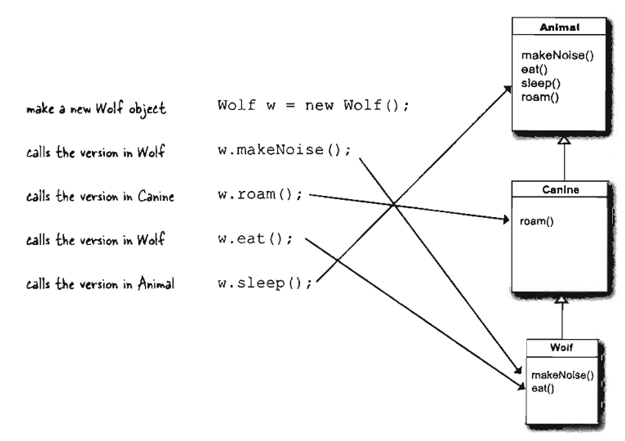

In Java, we say that the subclass extends the superclass. An inheritance relationship means that the subclass inherits the members of the superclass, When we say "members of a class" we mean theinstance variablesandmethods.
Workers Class doesn't need any behavior that's unique, so he
doesn't override any methods. The methods and instance variables in
SuperHero are sufficient.
Faculty, though, has
specific requirements it, so employeeDetails() is overridden in the
Faculty class.
Instance variables are not overridden because they don't need to be. They don't define any special behavior, so a subclass can give an inherited instance variable any value it chooses
Try Out : 1
Surgeon
have?
FamilyDoctor
have?
Doctor have?
Surgeon have?
FamilyDoctor have?
FamilyDoctor do treatPatient()?
FamllyDoctor do makelncision()?
Consider the following Animal class
class Animal{
void walk(){
System.out.println("I am walking");
}
}
This class has only one method, walk.
Next, we
want to create a
Bird
class that also has a fly method. We do this using extends
keyword:
class Bird extends Animal {
void fly() {
System.out.println("I am flying");
}
}
Finally, we can create a Bird object that can both fly and walk.
public class MainTestClass{
public static void main(String[] args){
Bird bird = new Bird();
bird.walk();
bird.fly();
}
}
The above code will print:
I am walking I am flying
This means that a Bird object has all the properties that an Animal
object has, as well as some additional unique properties.
The code above is provided. You must add a sing method to the Bird class, then modify the main method accordingly so that the code prints the following Output:Try Out : 2
I am walking I am flying I am singing
The Wolf class has four methods. One inherited from Animal, one
inherited from Canine (which is actually an overridden version ofa
method in class Animal), and two overridden in the Wolf class.
When you create a Wolf object and assign it to a
variable, you can use the dot operator on that reference variable
to invoke all four methods.
But which version of those methods gets called?
See Below Example:
 Source: Java head First 2nd Edition
When you call a method on an object reference, you're calling the
most specific version of the method for that object type.
In simple words, When you call a method using Child class
object, First it will search the method in child class, if not
found, then, it goes to parent class and so on.
So,invoking a method on a reference to a Wolf object means
the JVM starts looking first in the Wolf class. If the JVM doesn't
find a version of the method in the Wolf class, it starts walking
back up the inheritance hierarchy until it finds a match.
As we know that the JVM starts walking up the Inheritance tree, starting at the class type you Invoked the method on (like the Wolf example on the previous page). But what happens If the JVM doesn't ever find a match???
If you want go through Different Types of Inheritance
Note: Java does not support multiple inheritance but the multiple inheritance can be achieved by using the interface. In Java Multiple Inheritance can be achieved through use of Interfaces by implementing more than one interfaces in a class.